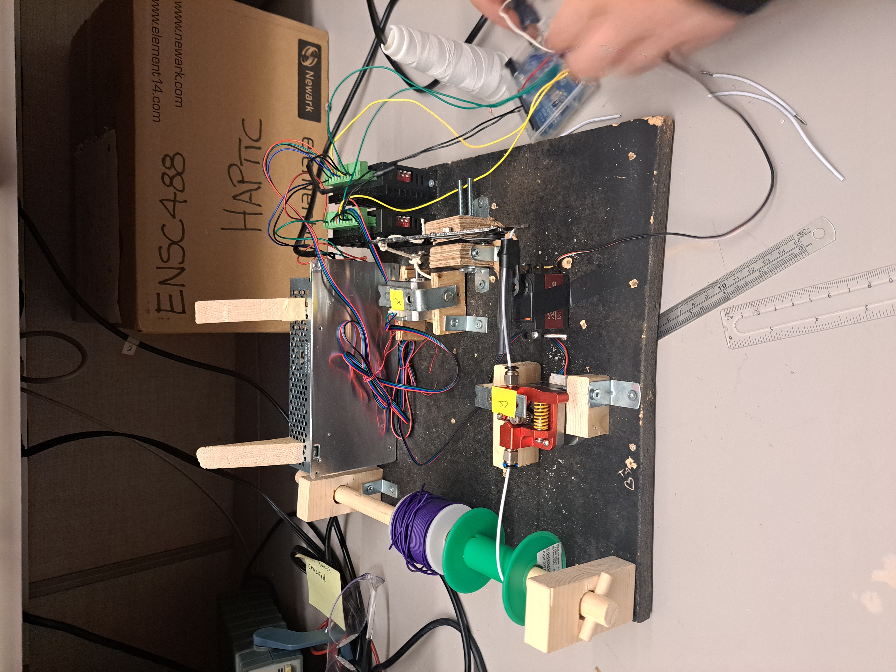

This was my first major engineering group project in university. This project was a automatic wire cutter design to automatically cut wires to a specified length. It was created in a group of 5. The project was done over the course of the entire semester, and the results can be seen below. I was able to use my previous woodworking experience to assist in the creation of several components, as can be seen in the image. Tools used for said woodworking include but was not limited to: bandsaws, table saws, and routers.

Image of the final wire cutter design
Short gameplay of the first level
As this project was my first engineering project, I learned a lot about the design process for larger projects, including the conceptual stage, prototyping stage, and the workflow during development. In addition, I Was able to apply new knowledge relating to electronics and software that I learned over the course of the semester into the project. Additionally, our group learned about being too ambitious, as the project was originally intended to be an a utomatic wire cutter and stripper. However, due to time constraints and difficulties with the screen, we were forced to drop the stripping and the screen.
"Well, This is the part where he kills us." "Hello. This is the part where I kill you!" If you are reading this you should go watch the Portal Radio Loop 10 Hours and go to 5 hours & 19 minutes